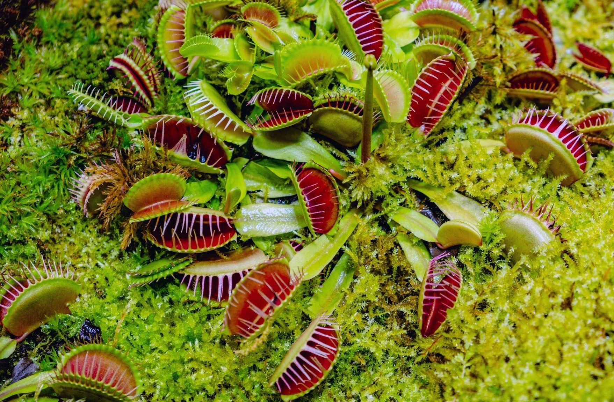

Quelques infos sur les plantes-carnivores :
Une plante carnivore est une plante qui attire et capture des proies pour après les assimiler pour leurs subvenir à une partie de leurs besoins, il existe un peu plus de 700 espèces de plantes carnivores. Ce chiffre devrait augmenter car en moyenne trois espèces de plantes carnivores sont découvertes ou décrites chaque année depuis l'an 2000. Je vous conseille de passer votre souris sur les différents textes.